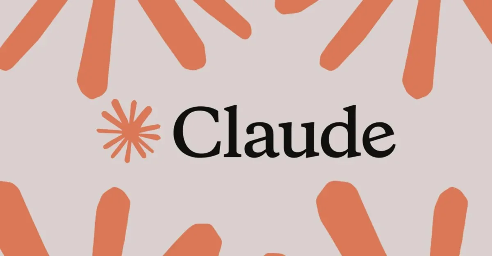
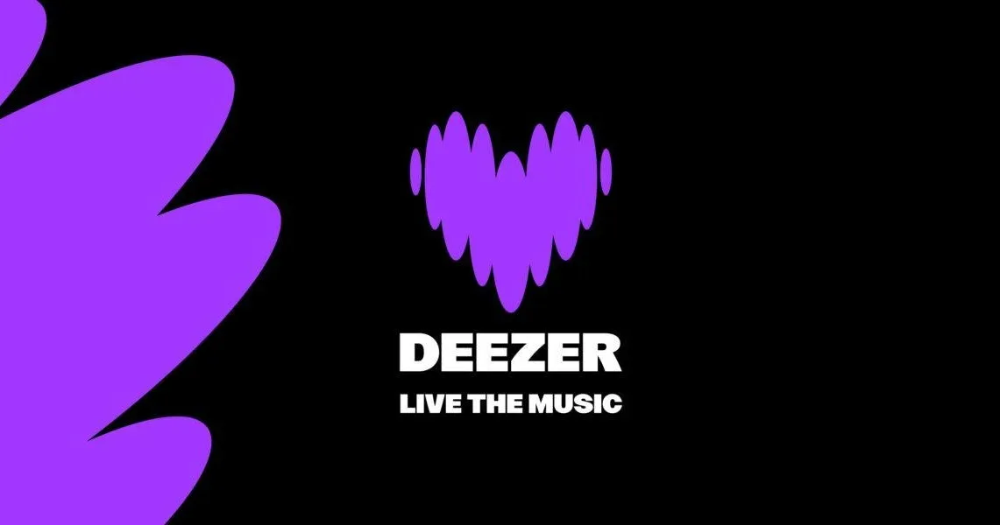
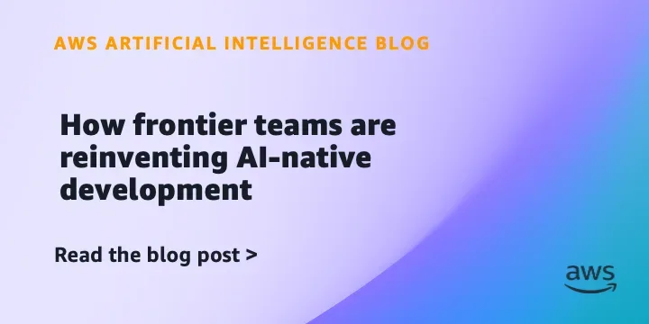

СтартапыРоссия
OpenAI рассматривает резкое снижение цен на токены под давлением Anthropic
OpenAI готовится резко снизить цены на токены — Anthropic поджимает
vc.ru AI/стартапы
11 июн.Сохранённые материалы за этот день.
66 материалов
OpenAI готовится резко снизить цены на токены — Anthropic поджимает
Urbanomy от ИТМО: ИИ-инструмент для оценки экономических последствий градостроительных проектов.
Данные опроса Skysmart: 20% подростков уже пробовали вайбкодинг, но 41% не знают о такой возможности.
В EXANTE продакт-оунер превратила недельный ресёрч в дневной черновик с помощью ИИ — но без ручной проверки не обходится.
ИИ-агенты закрывают задачи за минуты. Что осталось делать разработчику?
Fable 5 против Opus 4.7: кто лучше учится на ошибках в агентных циклах — цифры из экспериментов Anthropic
Фаундер ITSalt собрал скилл, который сам пишет промпты по 10 блокам — и проверяет их через 18 тестов

Anthropic извинился за скрытые guardrails в Claude Fable 5 и пообещал прозрачность после скандала с дистилляцией.
Russ добавила три нейросети в мониторинг цифровых экранов — неисправности обнаруживаются автоматически.
Платформа управления PostgreSQL-инфраструктурой обновилась до версии 6.4: ИИ-ассистент, поддержка Tantor Polar и новые метрики мониторинга.
Платформа для аудита розничных сетей перенесла инфраструктуру в облако Cloud.ru и начала пилотировать ИИ-сервисы.
iSpring LMS автоматизирует создание черновиков курсов: достаточно загрузить файлы и указать тему.
Производитель энергосистем ПСМ объединяет инженерию, вычисления и ИИ в одном контуре для промышленных заказчиков.
Один снимок страницы в Playwright MCP съедает 38 831 токен — больше, чем вся схема GitHub MCP
Тестирование GigaChat в реальном агентном workflow: сложности с tool calling, streaming и протокольной совместимостью.
LLM-агенты могут выполнять код — но это опасно. Разбираем, как защитить систему с помощью песочницы.

Один промпт, ноль строк кода вручную — и готовая игра с моралью про ИИ-журналистику

Как объединить слои нейросети через межбатчевую связь и приблизиться к биологическим нейронам?

Почему «Финист — ясный сокол» объясняет prompt injection лучше любого курса

Mustash — open-source утилита для создания умных плейлистов из избранного Spotify с настраиваемыми правилами.

Почему RAG ломается в продакшене и как это починить конкретной инженерной работой
Anthropic хотела тайно замедлить Claude для ИИ-исследователей — и была вынуждена отступить

Deezer запустила детектор ИИ-музыки, работающий на 20 платформах, включая Spotify и Apple Music.

Каждая четвёртая российская компания уже запустила ИИ в облаке — что их туда привело

Дипфейки по текстовому запросу, фишинг через мессенджеры и 499 инвестиционных ловушек — итоги I квартала 2026

Дефицит 50 тысяч безопасников — и месяцы отказов. Что сломалось в найме и как с этим жить

Amazon делится опытом ИИ-нативной разработки: 20-кратный рост продуктивности, 76 дней вместо 18 месяцев, и три проверенных подхода.
Dario Amodei руководит Anthropic с одним прямым подчинённым — вот как это работает.
Opendoor ушёл из Индии и сослался на ИИ. Что это значит для глобального аутсорсинга?

Корпоративные клиенты Oracle смогут оплачивать GPT-4o и Codex через облачные кредиты — без создания новых закупок.